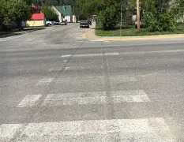

Faded Pedestrian Crosswalk
Location: Main Street, infront of the Elementary School
Reported by: Diana Sherie


The crosswalk markings are getting really hard to see. It would be great if they could be repainted before they fade any more.

The markings at this crossing are pretty faded now. Repainting them would help improve safety for everyone using the intersection.

The crosswalk isn't as visible as it used to be. Updating the paint would make it easier for drivers to recognize the crossing area.